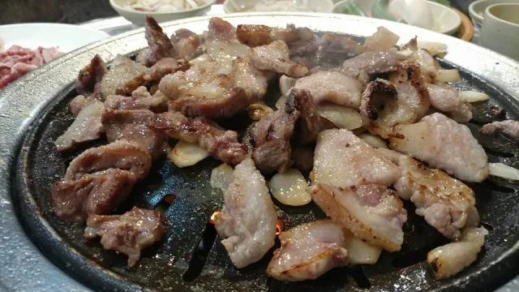
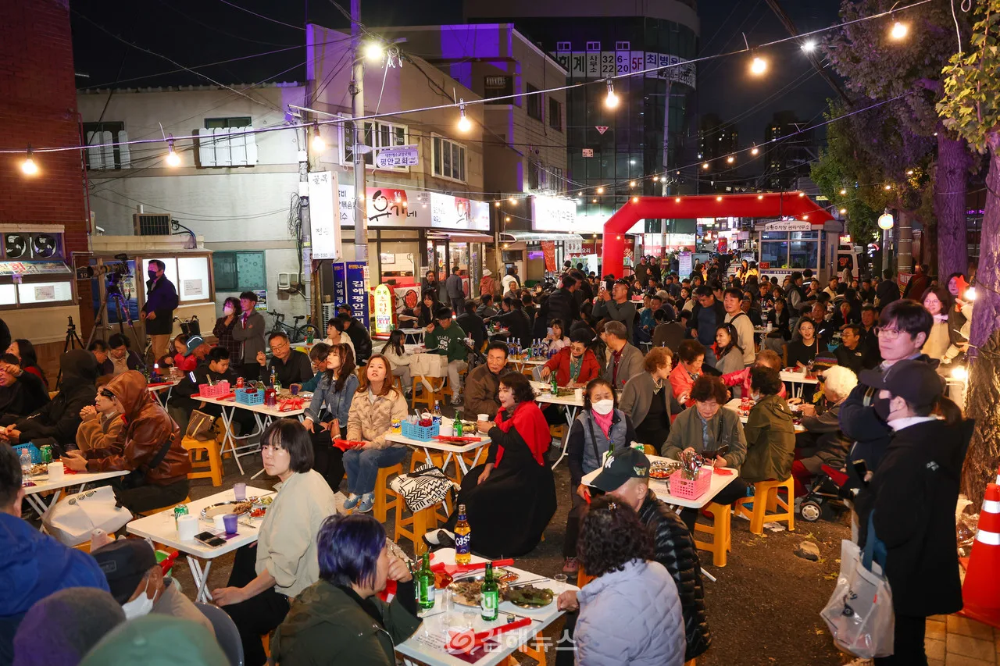
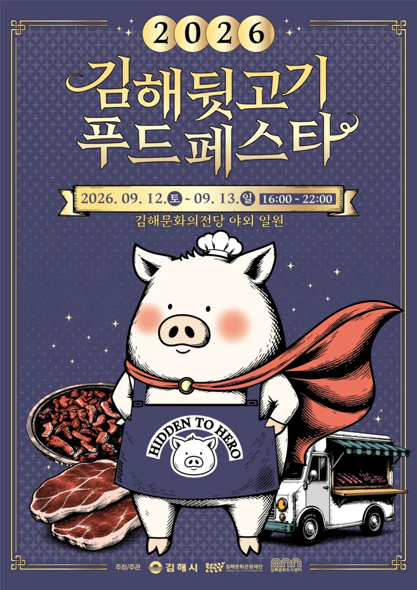
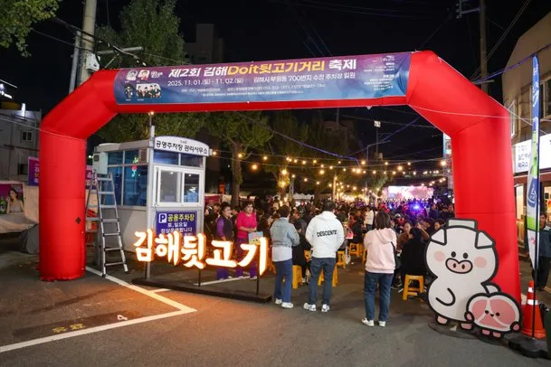
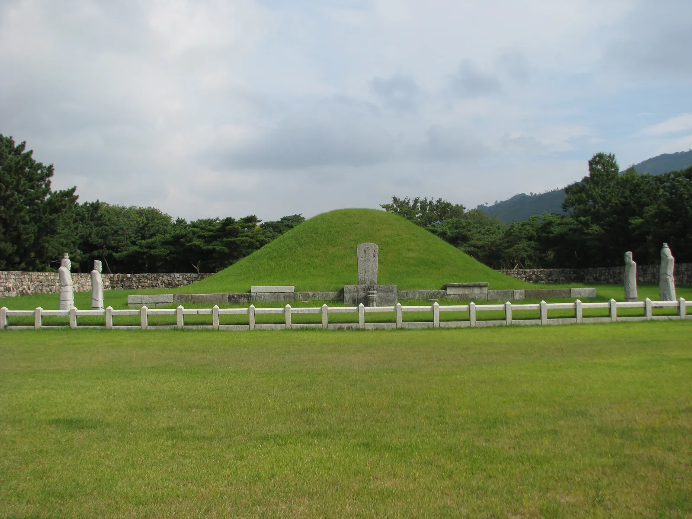
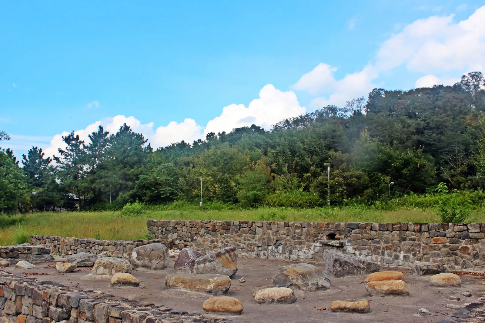

▲ 눈살·볼살·혀살·항정살이 뒤섞인 뒷고기는 부위마다 식감이 달라 한 접시에서 여러 맛을 즐길 수 있다 사진=부산일보
도축장 뒷문에서 몰래 거래되던 고기가, 이제는 도시 이름 앞에 붙는 브랜드가 됐다. 경남 최대 양돈 지역인 김해에서 '뒷고기'는 눈살·볼살·혀살·항정살처럼 살코기를 발라내고 남은 부위를 뜻한다. 1980년대 도축업자들이 정형 후 남은 이 부위를 몰래 먹거나, 형편이 어려운 손님에게 뒷문으로 저렴하게 팔았다는 데서 이름이 유래했다는 이야기가 전해진다.
싸고 맛있다는 입소문이 쌓이면서 김해는 뒷고기 전문점이 밀집한 거리를 공식 '뒷고기거리'로 지정했고, 최근에는 축제까지 두 개로 늘었다. 공교롭게도 이 글을 쓰는 오늘(9월 13일)이 바로 '2026 김해뒷고기푸드페스타'의 마지막 날이다. 뒷고기거리 방문법부터 두 축제의 차이, 근처에 묶어갈 만한 코스까지 정리했다.
1. 뒷고기, 잡고기라 불리던 그 맛의 정체
뒷고기는 삼겹살이나 목살처럼 이름 붙은 부위가 아니라, 정형 과정에서 자투리로 남는 여러 부위를 한데 모은 것이다. 눈살, 볼살, 혀살, 항정살 등이 뒤섞여 있어 부위마다 식감과 기름기가 조금씩 다르고, 한 접시 안에서도 쫄깃한 부분과 고소한 부분을 함께 맛볼 수 있다.
▲ 뒷고기는 이름 붙은 특정 부위가 아니라 여러 잡부위를 섞은 것이 특징이다 사진=부산일보
유래에 대한 이야기는 이렇다. 1980년대, 도축업자들이 소·돼지를 정형해 상품으로 낼 부위를 추려내고 남은 잡고기를 몰래 먹었다거나, 형편이 어려운 손님이 정식 판매대가 아닌 뒷문으로 이 잡고기를 싸게 사 갔다는 데서 '뒷고기'라는 이름이 붙었다는 설이 유력하다. 김해가 경남 최대 양돈 지역이라는 점도 뒷고기가 이 지역 명물로 자리 잡는 배경이 됐다. 실제로 뒷고기는 김해시가 선정한 '김해 9미(味)' 중 4번째(4미)로 이름을 올릴 만큼 지역을 대표하는 음식으로 꼽힌다. 김해 9미는 불암장어(1미), 동상시장 칼국수(2미), 진영갈비(3미), 뒷고기(4미), 한림메기국(5미), 내외동 먹자골목(6미), 서상동 닭발골목(7미), 대동오리탕(8미), 진례닭백숙(9미)으로 구성돼 있다.
2. 김해 뒷고기거리 — 봉황동·부원동 600m
뒷고기 전문점이 밀집한 거리는 봉황동과 부원동 일원 약 600m 구간이다. 김해시는 2023년, 이듬해인 2024년 '김해 방문의 해'와 전국체전 개최를 앞둔 시점에 이 일대를 공식 '뒷고기거리'로 지정했다. 봉황동 부산카에서 봉리단길집, 부원동 동네커피에서 오성커피숍까지 이어지는 기역자 형태의 구간으로, 15개 안팎의 뒷고기 전문점이 영업 중이다. 도축장에서 시작된 먹거리가 이제는 관광 코스의 이름이 된 셈이다.
| 구분 | 내용 |
|---|---|
| 위치 | 김해시 봉황동·부원동 일원 (약 600m 구간) |
| 지정 | 2023년 김해시 공식 '뒷고기거리' 지정 (2024년 김해 방문의 해·전국체전 대비) |
| 주차 | 부원동 수정주차장 이용 가능 |
| 가격대 | 식당별 상이 (축제 기간 특별할인 시 120g 5,000원 수준) |
| 주변 볼거리 | 수로왕릉, 봉황동유적, 가야사 누리길 (도보권) |

▲ 해가 진 뒤 뒷고기거리. 골목을 따라 늘어선 식당마다 불이 켜진다 사진=김해뉴스
정확한 영업시간과 가격은 식당마다 다르므로 방문 전 개별 확인이 필요하지만, 기본적으로 부원동 수정주차장을 기준점 삼아 걸어 다니며 여러 곳을 비교해보는 방식이 편하다. 축제 기간이 아니어도 상시 영업하는 거리이므로, 굳이 축제 날짜를 맞추지 않고 평소에 들러도 된다.
3. 2026 김해뒷고기푸드페스타 — 오늘이 마지막 날
'2026 김해뒷고기푸드페스타'는 9월 12일(토)부터 13일(일)까지, 김해문화의전당 야외 일원에서 열린다. 지난해까지는 국가유산야행과 연계해 진행되던 프로그램이었지만, 올해부터는 독립 행사로 분리돼 지역 소상공인·시민이 참여하는 차별화된 미식 축제로 규모를 키웠다.

▲ 2026 김해뒷고기푸드페스타 공식 포스터. 주제는 'Hidden to Hero' — 숨겨졌던 뒷고기를 김해의 대표 미식 브랜드로 키우겠다는 의미다 사진=김해시
축제 주제는 'Hidden to Hero'. 그동안 뒷문에서 몰래 거래되던 '숨은 맛'이었던 뒷고기를, 김해를 대표하는 문화 브랜드로 끌어올리겠다는 의미를 담았다. 김해문화의전당과 연지공원을 잇는 도로를 차 없는 거리로 전환해 축제 공간으로 쓰는 것도 특징이다.
📍 주요 프로그램
· 마스터스 다이닝(김해미식평상) — 야외 평상에서 뒷고기 요리를 즐기는 다이닝존
· 히든 푸드 마켓(명가의 만찬) — 부산·경남 유명 맛집들의 뒷고기 활용 요리 부스
· 투 트랙 스테이지 — 셰프 요리 공연과 푸드토크쇼(오세득·레이먼킴 셰프 출연)
· 스탬프 투어('숨겨진 레시피를 찾아라') — 부스를 돌며 스탬프를 모으는 참여형 프로그램
▲ 2026 김해뒷고기푸드페스타는 명예홍보대사 위촉식도 함께 열었다 사진=경남도민일보
축제 프로그램과 부스 운영 시간 등 최신 공지는 김해일보 기사에서 확인 가능하다. 2026 뒷고기푸드페스타 기사 바로가기
4. 김해Doit 뒷고기거리축제 — 또 다른 뒷고기 축제, 11월
헷갈리기 쉬운 지점이 하나 있다. 뒷고기 이름을 건 축제는 사실 두 개다. 앞서 소개한 '뒷고기푸드페스타'가 김해시·문화재단이 주도하는 9월 행사라면, '김해Doit 뒷고기거리축제'는 뒷고기거리가 있는 부원동 주민자치 차원에서 매년 11월경 여는 거리 축제다.

▲ 부원동 수정주차장 일원에 설치된 뒷고기거리축제 입구. 지난해(2025년) 제2회 행사 모습이다 사진=쿠키뉴스
2025년 열린 제2회 행사는 11월 1일(토)~2일(일), 부원동 700번지 수정주차장과 연접 도로 일원에서 진행됐다. 문화공연, 끼자랑 경연대회, 뒷고기 음식판매와 무료시식회로 구성됐고, 특별할인가로 120g에 5,000원에 뒷고기를 판매했다. 사전예약자에게는 뒷고기 해설사의 설명을 들으며 직접 구워 먹는 BBQ존도 운영했다. 2024년 열린 1회 행사에는 이틀간 약 4,000명이 다녀갔다.
▲ 밤이 되면 뒷고기거리 곳곳의 테이블이 시민들로 가득 찬다 사진=쿠키뉴스
✅ 두 축제, 이렇게 구분하면 헷갈리지 않는다
· 뒷고기푸드페스타: 9월, 김해문화의전당 야외 — 셰프·다이닝 중심의 미식 축제
· Doit 뒷고기거리축제: 11월, 부원동 수정주차장 일원 — 거리 공연·시식 중심의 동네 축제
· 2026년 제3회 Doit 뒷고기거리축제의 정확한 날짜는 이 글 작성 시점 기준 아직 공지되지 않았다. 방문 전 김해시청 또는 부원동행정복지센터에 확인이 필요하다
5. 뒷고기거리와 묶어 다닐 만한 코스
뒷고기거리가 있는 봉황동·부원동 일대는 김해 구도심의 역사 유적과도 가깝다. 국립김해박물관에서 출발해 대성동고분박물관, 수로왕릉, 구지봉, 봉황동유적을 잇는 '가야사누리길'은 해반천변 '가야의 거리', 봉황공원, 연지공원, 가문지교 등을 지나는 도보 코스로 전 구간을 다 걸으면 3시간 40분가량 걸리지만, 뒷고기거리와 가까운 수로왕릉·봉황동유적 구간만 골라 걸으면 1시간 안팎으로도 충분하다. 뒷고기거리와 같은 생활권에 있어 식전이나 식후 산책으로 묶기 좋다.

▲ 수로왕릉. 금관가야를 세운 김수로왕의 능으로, 뒷고기거리와 같은 생활권인 봉황동 일대에 있다 ⓒ Kwj2772 / Wikimedia Commons (CC BY-SA 3.0)

▲ 봉황동유적. 1920년 국내 최초로 발굴 조사가 이뤄진 청동기~가야시대 유적으로, 뒷고기거리와 같은 봉황동에 있다 ⓒ 최옥석 / Wikimedia Commons (CC BY-SA 4.0)
차로 이동한다면 뒷고기거리 인근 부원동 수정주차장이나 김해문화의전당 주차장을 기준점 삼아, 유적지를 먼저 걷고 저녁에 뒷고기로 마무리하는 동선이 무난하다. 구도심 골목이 좁은 구간이 많으니 대형 차량은 진입 전 도로 폭을 미리 확인하는 것이 좋다.
6. 주차·교통 정리 및 요약
| 장소 | 주차 | 비고 |
|---|---|---|
| 뒷고기거리(봉황동·부원동) | 부원동 수정주차장 | 상시 영업, 골목 좁아 도보 이동 권장 |
| 뒷고기푸드페스타 행사장 | 김해문화의전당 주차장 | 9월 12~13일 16:00~22:00, 연지공원 연결도로 차없는거리 운영 |
| Doit 뒷고기거리축제 행사장 | 부원동 700번지 수정주차장 | 2025년 11월 1~2일(2회) 기준, 2026년 일정 별도 공지 예정 |
뒷고기는 도축장 뒷문에서 시작된 자투리 고기였지만, 지금은 김해라는 도시의 미식 브랜드가 됐다. 봉황동·부원동 뒷고기거리는 상시 방문 가능하고, 9월 뒷고기푸드페스타와 11월 Doit 뒷고기거리축제라는 두 개의 축제가 각각 다른 성격으로 이를 뒷받침한다.
축제 일정을 놓쳤더라도 아쉬워할 필요는 없다. 뒷고기거리 자체는 연중 운영되고, 근처 수로왕릉·봉황동유적을 잇는 가야사 누리길까지 묶으면 식사와 산책을 함께 즐기는 반나절 코스가 된다.